世界の生産者から美味しいものだけを
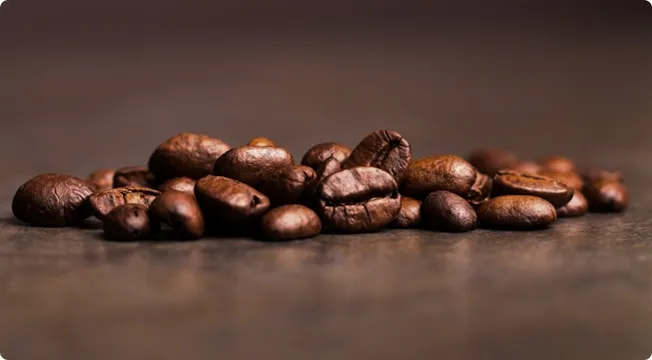
契約農園から厳選した最高品質のコーヒー豆を
直接買い付けしております。
各地の気候と土壌が生み出す豊かな風味、
生産者の情熱と技術が結集。

美味しさだけでなく、
生産背景まで感じられるコーヒー体験を。
SPECIALTY COFFEE
スペシャリティコーヒーとは？
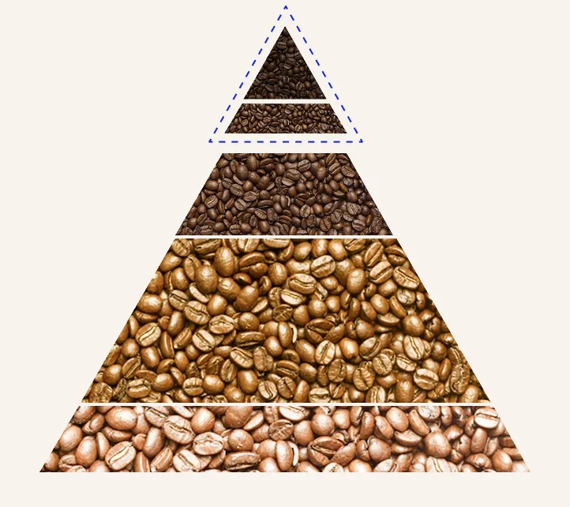
5%
10%
50%
35%
High Quality Specialty
Specialty
ブルーマウンテン、キリマンジャロ、ハワイコナなど
スペシャリティコーヒーとは、世界の流通量のわずか5%のコーヒー豆。
それは品質、風味、そして生産方法において最高レベルの基準を満たしたコーヒーを指します。
このコーヒーは、特定の地域、特有の気候、独自の栽培方法によって育てられ、各豆が持つユニークな特性が重視されます。
生産者の情熱と献身が、一粒一粒の豆に込められています。
柑橘系の明るい酸味から、花やハーブの繊細な香り、甘く濃厚なチョコレートやナッツのノートまで、幅広い風味が楽しめます。
私たちが提供するスペシャリティーコーヒーは、この高い基準に基づいて選ばれています。
一杯のコーヒーで、生産者のストーリーと自然の恵みを感じてください。
ENJOY THE FLAVOR
フレーバーを楽しむ
コーヒー一杯の中に広がる、
多彩なフレーバーの世界。
果実の甘さ、ナッツの深み、
フローラルの香りなど。
厳選された豆から生まれる、
豊かな味わいと香りをご堪能ください。
毎日のコーヒータイムが
特別なひとときへと変わります。
ROASTER
焙煎で豆の個性を引き出す
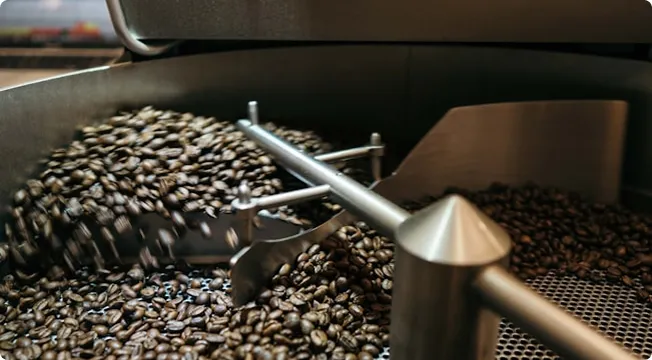
コーヒー豆の個性を最大限に引き出すために、
焙煎は非常に重要な役割を果たします。
当店では、
それぞれの豆が持つ独特の特性を理解し、
最適な焙煎方法を選択しています。
軽焙煎でフルーティーな酸味と華やかなアロマを、
中焙煎でバランスの良い甘みとコクを、
深焙煎で強いボディ感と
ビターな風味を引き出します。
Coffee Beans
- BRAZIL
- ブラジル
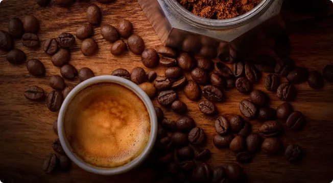
- 世界最大のコーヒー生産国。
- その豆は、豊かな甘みと低い酸味、ナッツやチョコレートのような風味が特徴。
- 多種多様な品種と、広範囲にわたる栽培地域により、幅広い味わいのコーヒーが生産される。
- ブラジル産は特にエスプレッソブレンドに好まれる。
- VIETNAM
- ベトナム
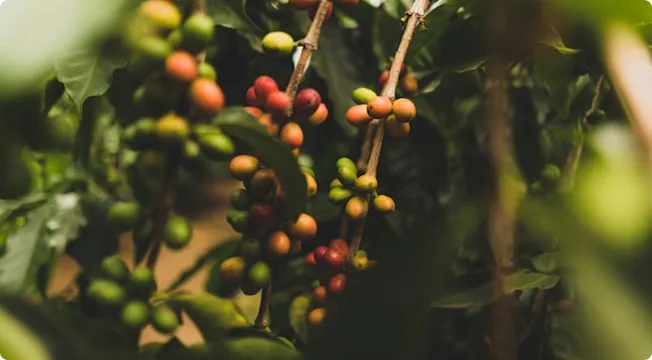
- 主にロブスタ種の豆を生産。
- 強いボディと独特の苦みが特徴で、スパイスや木の風味が際立つ。
- 世界第二位の生産国であり、良質なコーヒー豆も多く生産している。
- COLUMBIA
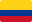
- コロンビア
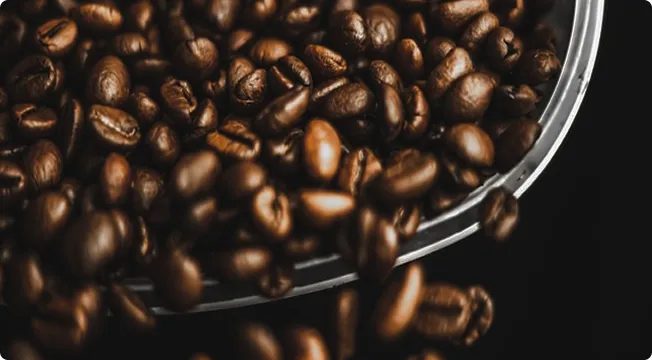
- 高地で栽培された豆は、芳醇な香りとバランスの取れた酸味、甘みが特徴。
- 多様なマイクロクライメートに恵まれ、個性的な風味を持つ豆が多い。
- コロンビア産は、その一貫した品質で世界中にファンを持つ。
- INDONESIA
- インドネシア
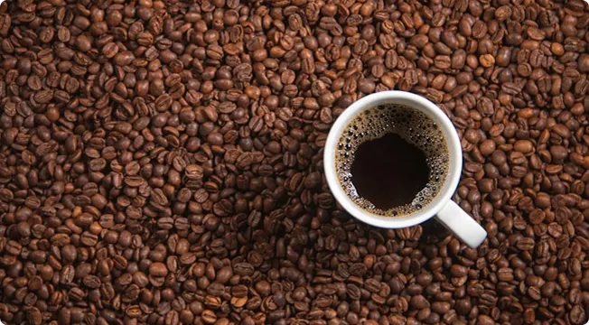
- 豊かなボディとスパイシー、アースィな味わいが特徴。
- 独特の処理方法、特に「ウェットハルド」や「ドライプロセス」が深い味わいを生み出す。
- インドネシアの豆は、その独特な風味でエスプレッソやダークローストに適している。
- ETHIOPIA
- エチオピア
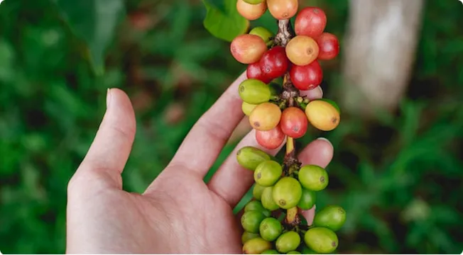
- コーヒーの原産国であり、豊富な品種と伝統的な栽培方法が特徴。
- フルーティーでフローラルな風味があり、複雑で繊細な味わいを持つ。
- 手摘み収穫や日干し処理により、独特の品質が保たれる。
- HONDURAS
- ホンジュラス
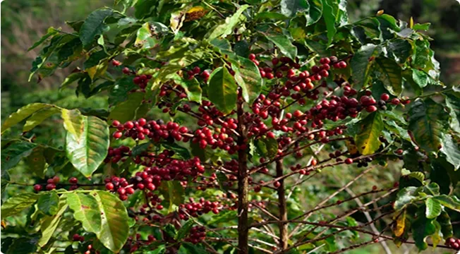
- 明るい酸味と豊かな甘み、バランスの良い味わいが特徴。
- 特に小規模農家による栽培が多く、伝統的な方法で生産される豆は、柔らかな口当たりとクリーンな後味が魅力。
- ホンジュラス産は、その高い品質でスペシャリティーコーヒー市場で注目されている。
Shop
- KOBE
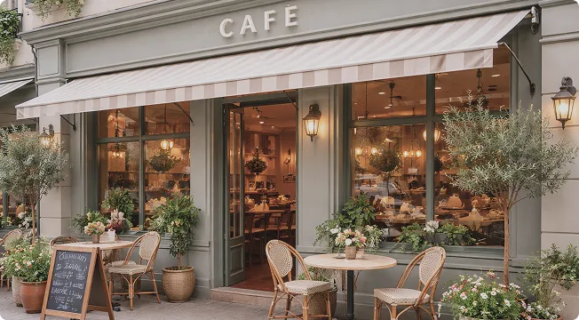
- Open - Close
- 11:00-21:00 (L.O 20:30)
- Address
- 〒650-003x
神戸市中央区元町350-20-2x - Tel
- 078-123-789x
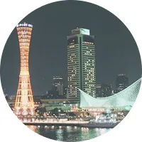
- OSAKA
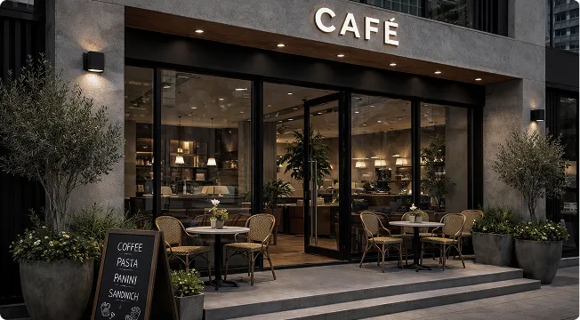
- Open - Close
- 11:00-21:00 (L.O 20:30)
- Address
- 〒530-000x
大阪市北区麹町1-24-x
グランフロント 1F - Tel
- 06-4321-765x
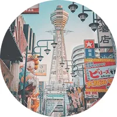
- KYOTO
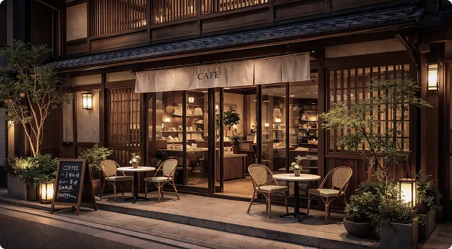
- Open - Close
- 11:00-21:00 (L.O 20:30)
- Address
- 〒600-803x
京都市中京区三条油小路123-2x
キャピタル三条 2F - Tel
- 075-221-722x
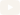
- よくある質問
- 店舗情報
- Language
- オンラインストア
- Good Day Cofffe’s Wi-Fi
- Site Map
- Recruitment